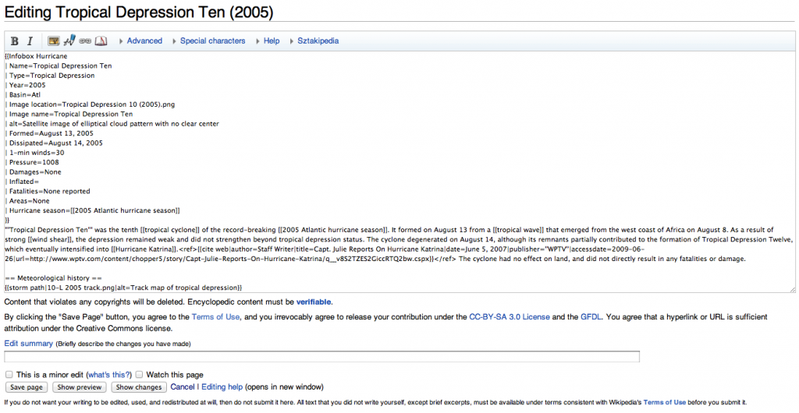
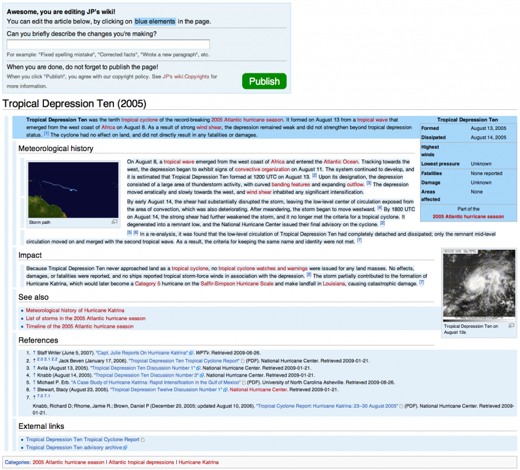
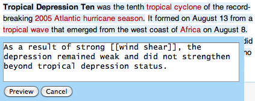

Help, I want to change Wikipedia!
Wikipedia has a problem. The number of active volunteers has been slowly decreasing for a couple of years. There are several reasons for this, and one of them is that it has become more difficult to edit Wikipedia. When you click the “Edit” button on some page, one expects to see an interface like Microsoft Word or Google Docs. Exactly the same appearance as when viewing the page, only now with a cursor and controls to edit the text and insert links and media. However, the opposite is true: you see a huge text box containing something that looks like a programming language.

For my bachelor’s thesis at the University of Groningen I investigated ways of improving this experience of editing Wikipedia. Why doesn’t it already use a visual editor such as Google Docs? This has everything to do with wikitext, this language you see when editing a page. Wikitext is the language in which pages on several wikis, including Wikipedia, are stored and edited. Once you save a page, this wikitext gets translated into HTML, the language used by web browsers to show a page.
Wikipedia was founded in 2001, just after the internet bubble, but before people were speaking of a Web 2.0. Back then it made sense to use such a language as wikitext. Microsoft Word already existed, but an online variant simply wasn’t there yet. The techniques and standards for such an interface on the web were not developed yet, and only some early experimental designs were being tested. It was possible to use simple text boxes in web browsers, though, so initially this was used to edit pages. To be able to apply some markup to pages, some codes were introduced, such as '''bold''', ''italic'', [[link]], and == heading ==. These codes were translated into HTML by means of substitution: first occurrences of ''' were replaced by <b> and </b>, the HTML tags denoting bold tags. Similarly the other codes were replaced by their harder to read HTML equivalents.
Because Wikipedia was growing rapidly, it became necessary to extend this list of codes to make common tasks easier, such as maintaining lists of references, including info boxes placed at the top right of pages, and so on. These additions were essential to Wikipedia’s volunteers, but at the same time the wikitext language became ever more convoluted.
Now, however, people are expecting something better than a huge text box. To make it easier for potential volunteers to contribute, it is necessary to offer an interface that is widely known, such as a visual editor. On the other hand, it isn’t desirable to get rid of wikitext completely, as this would alienate tens of thousands currently active contributors, who are used to this language. A better solution would be to still store the pages in wikitext, but to offer both ways of editing: visual editor for new users, and traditional wikitext editing for existing users.
However, building a visual editor on top of wikitext is easier said than done. This is because of the way wikitext is transformed to HTML, with a number of subsequent substitutions. A common way of building a visual editor on top of a language, is by using an intermediate representation of the text, called a document tree or syntax tree. Such a tree represents the page in a hierarchical way. A page contains paragraphs, paragraphs contain sentences, and sentences contain pieces of text, links, media, and so on. Alas, wikitext can’t be described by such a hierarchical model, because these substitutions make sure there is no such thing as wrong wikitext. There are even substitutions that fix common mistakes, such as '''bold [[link''']]. This is equivalent to '''bold [[link]]''', which has a defined hierarchy: the link is inside the bold text. In the former example, this hierarchy is not present: the bold text ends before the link element is closed.
While this is a silly example, there are more complex cases which are widely used in Wikipedia. There are people working on a intermediate representation that does allow for these kinds of cases, but as this is quite difficult it may take a while.
For my thesis I investigated if it’s perhaps possible to build a different kind of interface instead of a visual editor, which is both easy to use and easier to implement on top of wikitext. Eventually I arrived at a compromise: users get to see the same page when editing as when viewing, but they can’t edit it directly. Instead, there are some explicitly marked elements on the page that are editable, such as sentences, paragraphs, lists, info boxes, etc. Such editable elements are marked by either a light blue background colour, or in case of larger elements such as paragraphs, by a bar at the left of the element. When a user moves the mouse over such an element, it lights up in a darker colour, indicating it can be clicked.

Once clicked, a popup appears with the original wikitext for that element. Once the user has edited the wikitext and confirmed the change, the popup disappears and the page is updated with the new content.

Now, the user still has to edit wikitext, but in much smaller quantities. The idea is that there are not so many complex codes inside a single sentence or even paragraph, which makes it a lot less scary for potential volunteers to play around with a page. Also, the direct feedback when editing a small piece of wikitext may help in this, as it immediately clear what effect the changed wikitext has on the page.
The big advantage is that it’s not required to use an intermediate representation when generating such an interface. It’s only necessary to know for the editable elements to which parts of the original wikitext they correspond. For example, if it is known for a certain paragraph in the HTML output to which exact lines in the wikitext it corresponds, then we can show this wikitext when clicking the paragraph on the HTML page, and replace it when the user changes this wikitext.
To get the correspondence between wikitext and HTML I use a trick: annotation. Before the wikitext is transformed to HTML, I add some codes to it to mark some positions. These codes are chosen in such a way that they are not transformed into anything else, and they are also all unique. They are placed around basic elements, such as paragraphs, sentences, in fact everything we want to make editable and is easy to recognise. For every added code, we also record the exact position of the code inside the original wikitext. After this, the annotated wikitext is transformed into HTML, and the codes survive this transformation. Finally, the codes themselves are transformed again to make a valid HTML page. This way, every editable element gets a unique identifier based on the code it belongs to, so now it is possible to look up positions in the original wikitext whenever an such an element is clicked.
This is an example. A sentence with a [[link]].<paragraph-0>
<sentence-0>This is an example.</sentence-0>
<sentence-1>A sentence with a [[link]].</sentence-1>
</paragraph-0>
* paragraph-0: [1..47]
* sentence-0: [1..19]
* sentence-1: [20..47]
<p>
<paragraph-0>
<sentence-0>This is an example.</sentence-0>
<sentence-1>A sentence with a [[link]].
</sentence-1>
</paragraph-0>
</p>
<p id="paragraph-0">
<span id="sentence-0">This is an example.</span>
<span id="sentence-1">A sentence with a [[link]].</span>
</p>
Annotation during transformation of wikitext to HTML: (a) original wikitext, (b) wikitext after annotation, (c) list with positions, (d) HTML after transformation, (e) final HTML after using the annotations to generate HTML tags.
This doesn’t directly solve the problem of hierarchy, as HTML itself expects a strict hierarchy on elements. In the transformation this is fixed for the wikitext, but not for the added codes. This means that the example from above is still invalid:
<sentence-0>
<bold-0>'''bold <link-0>[[link'''</bold-0>]]</link-0>
</sentence-0>
After all, link-0 has to be closed before bold-0 is closed. This time, however, there is a remarkable simple solution: we can just remove all the conflicting codes! If it’s not possible to edit a single link in some cases, this doesn’t really matter, as it can still be changed by editing the entire sentence:
<sentence-0>
'''bold [[link''']]
</sentence-0>
There is always an element at a higher level that doesn’t conflict with any other element. In the worst case this means the highest element — the entire page — has to be edited, as that can never conflict with anything else. This is rare, however, and in most cases editing a single sentence or paragraph suffices. Such a fallback mechanism for weirder cases of wikitext does not exist for a visual editor.
You may wonder whether or not such an interface in which the user still has to edit wikitext — be it a bit less — is any improvement at all. To test this, I’ve worked together with GRNET, a Greek research institute, to test this hypothesis. They tested my final interface with “real” users, to see whether it works or not. The results were mostly positive, users found it quite easy to do most basic operations. Complex tasks were still difficult for most users, especially because users tried to do things they were used to do with visual editors, such as dragging and dropping of elements. While this is a downside of such a new editing paradigm, it was great to see how most tasks became a lot easier.
Despite these positive results you won’t see this interface on Wikipedia anytime soon, as it’s not finished. In my thesis I describe all the algorithms and other ideas for finishing the interface, but as the Wikmedia Foundation recently started working on a true visual editor, I decided to put this project on hold for now. On the other hand, an editor like this has other advantages, such as being easier to use than one big text box for power users who don’t want to use a visual editor, or for newcomers who’d like to slowly learn to do more complex tasks. So who knows, perhaps one day you can use my interface to edit Wikipedia!